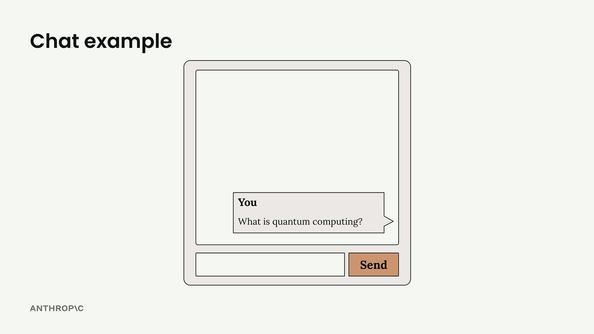
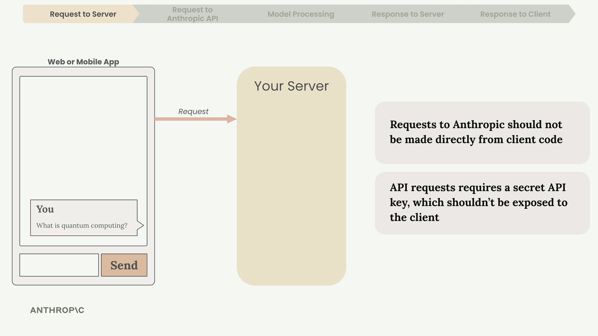
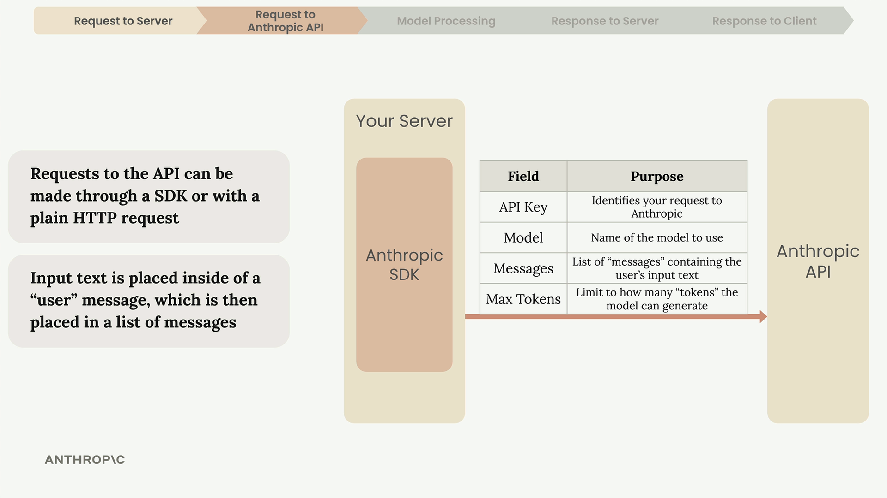
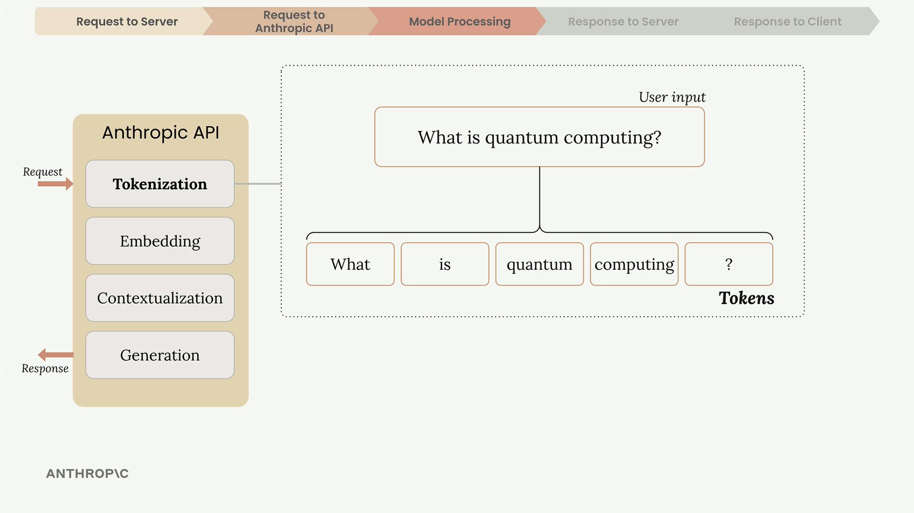
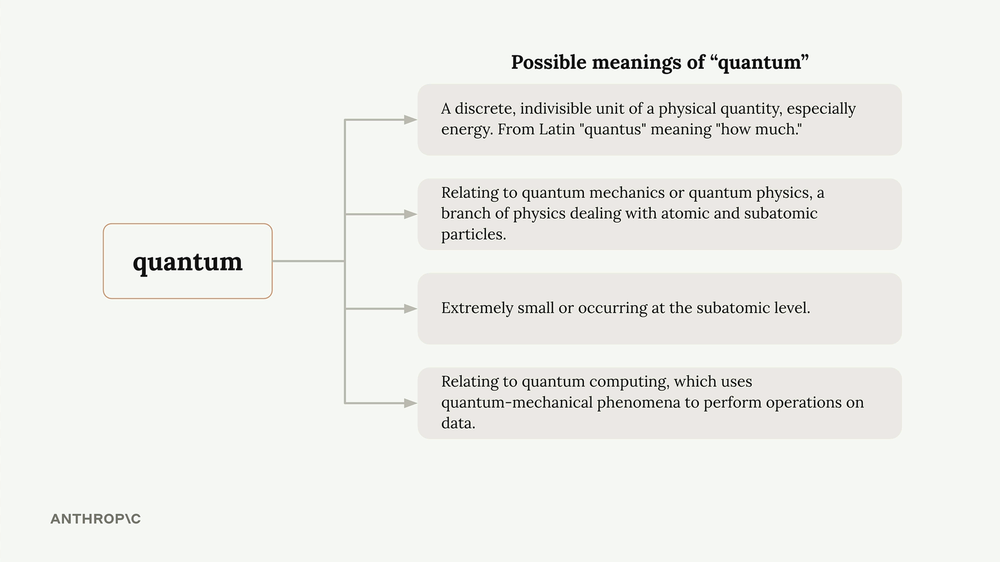
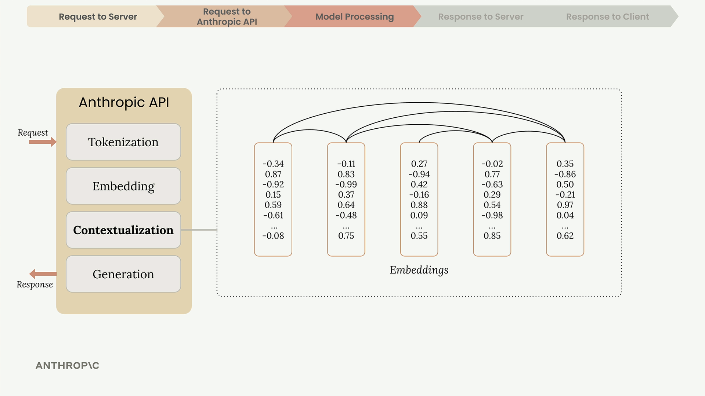
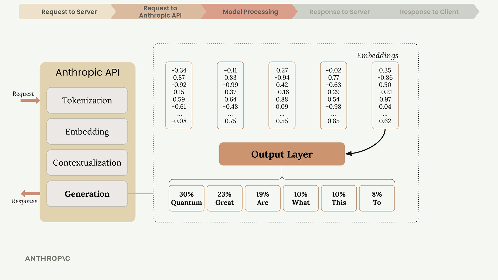
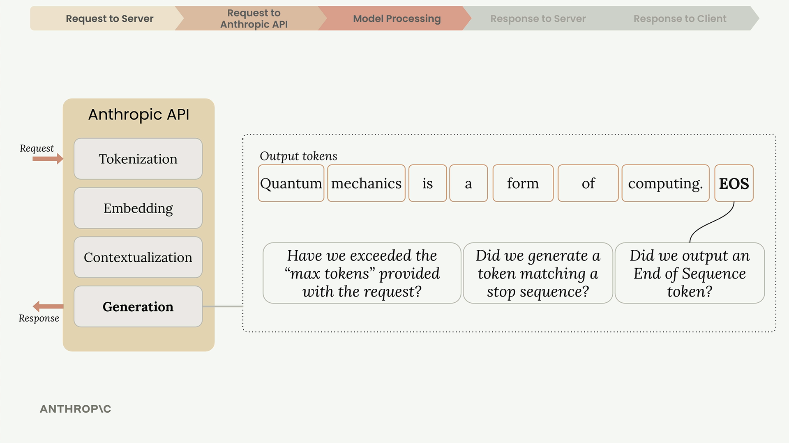
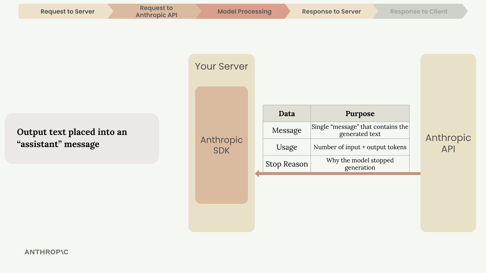
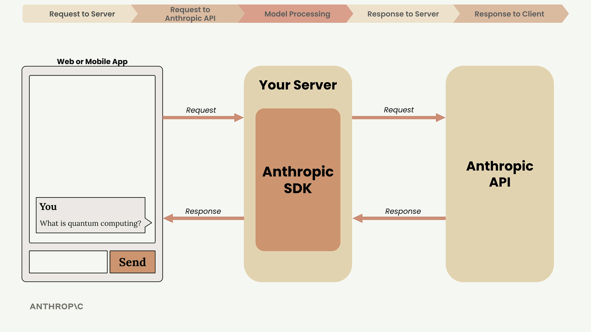

API 접근하기
Claude로 애플리케이션을 구축할 때, 전체 요청 생명주기를 이해하면 더 나은 아키텍처 결정을 내리고 문제를 더 효과적으로 디버깅할 수 있습니다. 사용자가 채팅 인터페이스에서 "전송"을 클릭하는 순간부터 Claude의 응답이 화면에 나타날 때까지 무슨 일이 일어나는지 살펴보겠습니다.

5단계 요청 흐름
Claude와의 모든 상호작용은 다섯 가지 뚜렷한 단계로 이루어진 예측 가능한 패턴을 따릅니다: 서버로의 요청, Anthropic API로의 요청, 모델 처리, 서버로의 응답, 그리고 클라이언트로의 응답입니다.

서버가 필요한 이유
클라이언트 측 코드에서 Anthropic API에 직접 요청을 보내서는 절대 안 됩니다. 그 이유는 다음과 같습니다:
- API 요청에는 인증을 위한 비밀 API 키가 필요합니다
- 클라이언트 코드에 이 키를 노출하면 심각한 보안 취약점이 생깁니다
- 누구든 키를 추출하여 무단 요청을 보낼 수 있습니다
대신, 웹 또는 모바일 앱은 자체 서버로 요청을 보내고, 서버가 안전하게 저장된 키를 사용하여 Anthropic API와 통신합니다.
API 요청 만들기
서버가 Anthropic API에 접속할 때, 공식 SDK를 사용하거나 일반 HTTP 요청을 보낼 수 있습니다. Anthropic은 Python, TypeScript, JavaScript, Go, Ruby용 SDK를 제공합니다.

모든 요청에는 다음 필수 필드가 포함되어야 합니다:
- API Key - Anthropic에 요청을 식별합니다
- Model - 사용할 모델 이름 (예: "claude-3-sonnet")
- Messages - 사용자 입력 텍스트가 담긴 목록
- Max Tokens - Claude가 생성할 수 있는 토큰 수 제한
Claude의 처리 과정
Anthropic이 요청을 받으면, Claude는 토큰화, 임베딩, 문맥화, 생성이라는 네 가지 주요 단계를 통해 처리합니다.

토큰화 (Tokenization)
Claude는 먼저 입력 텍스트를 토큰이라는 작은 단위로 나눕니다. 토큰은 단어 전체, 단어의 일부, 공백, 또는 기호가 될 수 있습니다. 간단히 말해 각 단어를 하나의 토큰으로 생각하면 됩니다.
임베딩 (Embedding)
각 토큰은 해당 단어의 모든 가능한 의미를 나타내는 긴 숫자 목록인 임베딩으로 변환됩니다. 임베딩은 의미적 관계를 포착하는 수치적 정의라고 생각하면 됩니다.

단어는 종종 여러 가지 의미를 가집니다. 예를 들어 "quantum"은 다음을 의미할 수 있습니다:
- 물리적 양의 이산 단위 (물리학)
- 양자역학 또는 양자물리학 개념
- 극도로 작거나 아원자적인 것
- 양자 컴퓨팅 응용
문맥화 (Contextualization)
Claude는 주변 단어를 기반으로 각 임베딩을 정제하여 문맥에서 가장 적합한 의미를 결정합니다. 이 과정은 수치적 표현을 조정하여 적절한 정의를 부각시킵니다.

생성 (Generation)
문맥화된 임베딩은 각 가능한 다음 단어에 대한 확률을 계산하는 출력 레이어를 통과합니다. Claude는 항상 가장 높은 확률의 단어를 선택하지 않으며, 확률과 제어된 무작위성을 혼합하여 자연스럽고 다양한 응답을 생성합니다.

각 단어를 선택한 후, Claude는 이를 시퀀스에 추가하고 다음 단어를 위해 전체 과정을 반복합니다.
Claude가 생성을 멈추는 시점
각 토큰 이후, Claude는 계속 진행할지 결정하기 위해 여러 조건을 확인합니다:

- Max tokens reached - 지정한 한도에 도달했는지 확인
- Natural ending - 시퀀스 종료 토큰이 생성되었는지 확인
- Stop sequence - 미리 정의된 중지 구문을 만났는지 확인
API 응답
생성이 완료되면 API는 다음을 포함하는 구조화된 응답을 반환합니다:
- Message - 생성된 텍스트
- Usage - 입력 및 출력 토큰 수
- Stop Reason - 생성이 종료된 이유

서버는 이 응답을 받아 생성된 텍스트를 클라이언트 애플리케이션으로 전달하며, 사용자 인터페이스에 표시됩니다.

핵심 정리
이 흐름을 이해하면 다음에 도움이 됩니다:
- API 키를 보호하는 안전한 아키텍처 설계
- 사용 사례에 맞는 적절한 토큰 한도 설정
- 애플리케이션 로직에서 다양한 중지 이유 처리
- 파이프라인의 어느 지점에서 문제가 발생할 수 있는지 이해하여 디버깅
모든 세부 사항을 암기하려고 걱정하지 않아도 됩니다 - 목표는 Claude API로 작업할 때 접하게 될 용어와 전반적인 과정에 익숙해지는 것입니다.